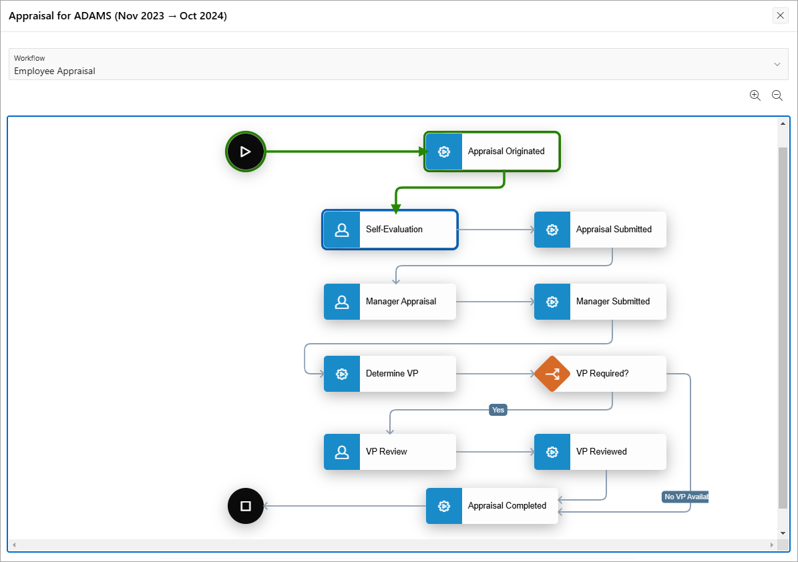
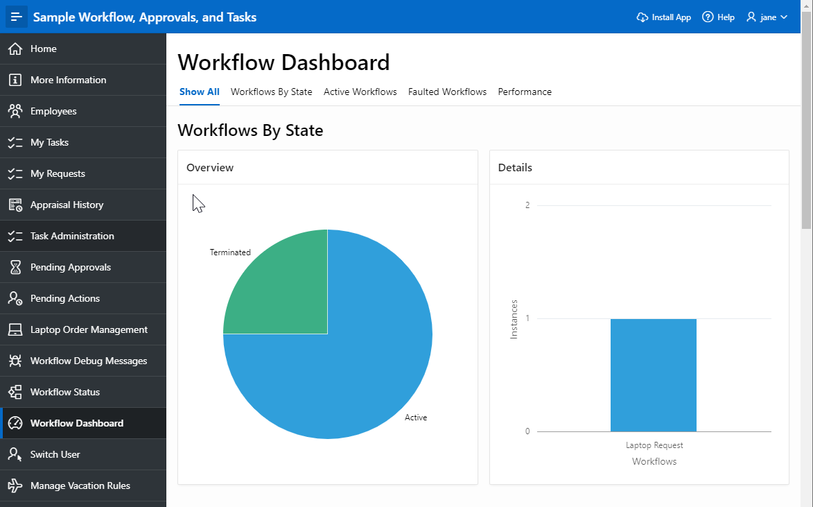

6.1 About Workflows
Learn about workflows, including workflow and activity states, participants, and the workflow console.
The workflow component in APEX allows APEX developers to design, implement, and automate business processes, in whole or part, during which documents, information, records, or tasks are passed from one participant to another for action according to a set of procedural rules.
The structure of a workflow is determined by the Workflow Definition, which is established by an application developer. Every time a workflow starts, APEX creates a Workflow Instance, which is a specific runtime from a workflow definition. To learn about designing workflows for an application, see About the Workflow Designer in Oracle APEX App Builder User’s Guide.
- the type of laptop requested
- the requisition date
- the employee number of the person requesting the laptop
Workflow Variables are additional data that may be used by one or more workflow activities. For example, if one activity in a workflow generates a laptop order, the order ID from that activity can be saved as a workflow variable. The order ID could then be used by a later activity in the workflow instance, such as an activity that sends a confirmation email.
Workflow parameters are read-only. Workflow variables can be updated by a workflow administrator.
Workflows may involve Tasks. For more information on tasks, see Using Tasks.
- About Workflow States
A workflow instance can be active, suspended, completed, terminated, or faulted. - About Activity States
An activity in a workflow instance can be active, waiting, faulted, or completed. - About Workflow Participants
Workflow participants can take action on workflows, including starting or terminating workflow, retrying faulted workflows, and updating workflow variables. - About the Workflow Console, Workflow Details, and Workflow Dashboard
The workflow console is a summary of workflows for an application. Select a workflow from the workflow console to view details about that specific workflow. If configured, use the workflow dashboard to view analytics for workflows.
Parent topic: Using Workflows
6.1.1 About Workflow States
A workflow instance can be active, suspended, completed, terminated, or faulted.
Workflow States
- Active
- A workflow that is currently running.
- Suspended
- A workflow that is currently suspended at a particular activity. A suspended workflow can be resumed by the Workflow Administrator.
- Completed
- A workflow that has reached an end activity and completed successfully.
- Terminated
- A workflow that has been stopped by the Workflow Owner or Workflow Administrator or a workflow that has reached an end activity with the state attribute set to terminated.
- Faulted
- A workflow that produced an error at one of its activities. The Workflow Administrator can retry or stop a faulted workflow.
Parent topic: About Workflows
6.1.2 About Activity States
An activity in a workflow instance can be active, waiting, faulted, or completed.
Activity States
- Active
- An activity that is currently running.
- Waiting
- An activity that is currently waiting for a result. For example, an activity might be waiting on approval from a task, or waiting for an invoked workflow to run.
- Completed
- An activity that completed successfully.
- Terminated
- An activity that was in active state when the workflow was stopped.
- Faulted
- An activity that fails to run.
Parent topic: About Workflows
6.1.3 About Workflow Participants
Workflow participants can take action on workflows, including starting or terminating workflow, retrying faulted workflows, and updating workflow variables.
Workflow Participants are APEX users with operational privileges over a workflow.
- Workflow Initiator
- Can start and terminate an instance of the workflow. Does not need to be specifically named in the workflow definition.
- Workflow Owner
- Can start and terminate any instance of the workflow. Can retry a faulted workflow. Must be specifically named in the workflow definition.
- Workflow Administrator
- Can start, terminate, suspend, resume, and retry any workflow instance. Can update variable values of a workflow instance. Must be specifically named in the workflow definition.
Parent topic: About Workflows
6.1.4 About the Workflow Console, Workflow Details, and Workflow Dashboard
The workflow console is a summary of workflows for an application. Select a workflow from the workflow console to view details about that specific workflow. If configured, use the workflow dashboard to view analytics for workflows.
Every application that uses workflows has two pages used for monitoring those workflows: the Workflow Console page, which summarizes workflows in the current application, and the Workflow Details page, which contains details about a specific workflow instance. Applications may also have a Workflow Dashboard page that shows analytics for workflows.
The Workflow Console Page
- Initiated by Me, for workflows where you are the Workflow Initiator.
- My Workflows, for workflows where you are a Workflow Owner.
- Admin Workflows, for workflows where you are a Workflow Administrator.
The Workflow Details Page
- activity instances and their states
- when an activity was started, completed, retried, faulted, or terminated
- workflow instance variables, which can be edited by workflow administrators
Tip:
The Workflow Details page showsVARCHAR2representations of the variables. ForCLOBvariables, the workflow details page displays the section of theCLOBthat is accommodated within theVARCHAR2limit. - workflow instance parameters
- an audit history of the workflow instance including, if applicable, the parent workflow and parent activity instance
- a read-only visual representation of the workflow
- (invoked workflows only) a button to navigate to the details of the parent workflow
- If you are the Workflow Initiator, you can terminate a workflow that you started.
- If you are the Workflow Owner, you can start a workflow, retry a faulted workflow, or terminate a workflow.
- If you are the Workflow Administrator, you can start, suspend, resume, retry, or terminate a workflow. If the workflow is faulted or suspended, you can update workflow variables.

Description of the illustration workflow_diagram_example.png
The Workflow Dashboard Page
- Workflows by State - Shows a pie chart with the distribution of workflows by state. Clicking on a particular state shows the number of workflow instances currently in that state.
- Active Workflows - Shows the number of workflows in an active or suspended state. Clicking on a particular workflow shows the number of workflow instances waiting at a particular activity.
- Faulted Workflows - Shows the number of workflows in a faulted state. Clicking on a particular workflow shows the number of workflow instances that are faulted at a given activity.
- Performance - Shows the average completion time for workflows. Use the Time Unit dropdown list to change the chart's time unit.

Description of the illustration workflow_dashboard_example.png
Parent topic: About Workflows